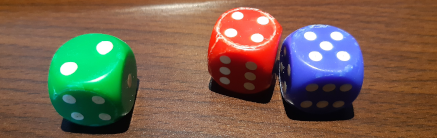

Cthulhu Dark, le JDR
Un système jeu léger pour jouer dans le monde des horreurs de Lovecraft
VOTRE INVESTIGATEUR
Choisissez un nom et une profession. Décrivez votre investigateur.
Prenez un dé à 6 faces vert pour votre Folie.
FOLIE
Votre folie démarre à 1.
Quand vous voyez quelque chose de dérangeant, faites un jet de Folie. Si vous faites plus que votre Folie, ajoutez 1 à votre Folie et jouez la peur.
FAIRE DES CHOSES
Pour connaître votre niveau de réussite quand vous entreprenez une action, jetez:
- Un dé si la tâche est dans les limites des capacités humaines;
- Un dé si elle fait partie de l'expertise associée à votre métier;
- Un dé pour votre Folie, si vous êtes prêt à risquer votre santé mentale pour réussir.
Si votre dé de Folie est plus élevé que les autres dés, faites un jet de Folie, comme indiqué ci-dessus.
Votre dé le plus élevé vous indique votre niveau de réussite. Si vous avez fait 1, vous réussissez à peine. Si vous avez fait 6, vous réussissez de manière brillante.
Par exemple : vous vous échappez par la fenêtre d'un hôtel à Innsmouth. En faisant 1, vous vous écrasez sur un toit adjacent, en attirant l'attention de tout le monde autour. Si vous faites 4, vous atterrissez sans bruit sur le toît, mais vous laissez des traces que vos poursuivants pourront suivre. Si vous faites 6, vous vous échappez discètement, tandis que vos poursuivants continuent de fouiller l'hôtel.
Quand vous enquêtez, le dé le plus élevé vous indique quel niveau d'information vous obtiendrez. Si vous tirez 1, vous aurez le strict minimum : si vous avez besoin d'information pour continuer le scénario, vous l'obtiendrez, mais c'est tout ce que vous aurez. Avec un 4, vous obtiendrez tout ce qu'un bon enquêteur doit découvrir. Et, avec un 6, vous risquez d'entr'apercevoir quelque chose au delà du savoir humain (et sans doute de devoir faire un jet de Folie).
Par exemple : vous êtes en train d'enquêter sur les manuscrits de votre grand-oncle. Si vous faites un 1, vous trouvez l'adresse "7 rue Thomas" (le prochain lieu du scénario). Avec un 6, vous trouvez que, du 28 février au 2 avril, de nombreux citadins ont fait des rêves peuplés de gigantesques créatures inconnues. Durant la même période, une association de théosophie a donné des robes de prêtre pour un "accomplissement glorieux". Parmi les rêveurs était M. Wilcox, habitant 7 rue Thomas.
ECHOUER
Si quelqu'un pense qu'il serait plus intéressant que vous échouiez, ils doivent décrire comment vous aller échouer et doivent ensuite jeter un dé. Attention : ils ne peuvent pas le faire si vous êtes en train d'enquêter et vous devez réussir pour que le scénario se poursuive.
Si leur dé est plus élevé que le plus élevé de tous vos dés, vous échouez, de la façon qu'ils ont décrite. Dans le cas contraire, vous réussissez comme avant, avec votre dé le plus élevé montrant votre niveau de réussite.
Si nous revenons à l'exemple ci-dessus où vous vous échappez par la fenêtre de l'hôtel. Cette fois, quelqu'un pense qu'il serait plus intéressant que vos poursuivants vous attrapent. Quand vous lancez les dés, vous obtenez le score le plus faible. Vous êtes pris.
RELANCER LES DES
Si vous avez inclus votre dé de Folie la dernière fois que vous avez lancé les dés et que vous n'êtes pas content du résultat, vous pouvez relancer tous les dés. Si vous n'avez pas inclus votre dé de Folie auparavant, vous pouvez l'inclure maintenant et rejouer.
Maintenant, regardez le nouveau résultat. Comme auparavant, le dé avec la plus haute valeur montre votre niveau de réussite.
Si votre dé de Folie a une valeur plus élevée que tous les autres dés, faites un jet de Folie, même si vous en avez déjà fait un après votre précédent lancer.
COOPERER ET ETRE EN COMPETITION
Coopérer : tous les joueurs coopérant doivent lancer leur dé. Le dé ayant le plus haut résultat du groupe détermine le résultat du groupe.
Etre en compétition : tous les joueurs en compétition doivent lancer leur dé. Celui qui obtient le plus haut résultat gagne. Si des joueurs sont ex-aequo, la personne avec la Folie la plus haute gagne. Si le score en Folie est le même, relancez les dés.
Comme auparavant, si votre dé de Folie donne une valeur plus haute que tous les autres dés, faites un jet de Folie. Et si quelqu'un n'est pas content avec son lancer, il peut relancer les dés en suivant la règle exposée ci-dessus.
SUPPRIMER LE SAVOIR
Quand votre Folie atteint 5, vous pouvez la réduire en supprimant du savoir concernant le Mythe : par exemple, brûler des livres, arrêter des rituels, vous détruire ou gêner l'enquête.
A chaque fois que vous faites cela, faites un jet de Folie. Si vous obtenez moins que votre Folie, enlevez 1 à votre Folie. De plus, vous pouvez continuez à supprimer du savoir sur le Mythe quand votre Folie passe en dessous de 5.
DEVENIR FOU
Quand votre Folie atteint 6, vous devenez irrémédiablement fou. C'est un moment spécial : tout le monde est attentif aux derniers moments de votre personnage dont l'esprit se brise. Sortez tant que vous le pouvez : combattez, hurlez, courrez ou effondrez-vous.
Ensuite, soit vous faites un nouveau personnage, ou vous continuez à jouer en étant fou. Dans tous les cas, retirez le personnage du jeu aussi vite que vous le pourrez.
AUTRES CLARIFICATIONS
- Si vous combattez n'importe quelle créature que vous rencontrez, vous mourrez. C'est pourquoi, dans ces règles de base, il n'y a pas de système de combat, ou de points de vie. En lieu et place, lancer les dés pour vous cacher ou vous enfuir.
- Des exemples de choses étant dans les limites des capacités humaines sont : crocheter, trouver R'lyeh, déchiffrer les symboles sculptés, se souvenir de quelque chose, trouver un objet caché, rationaliser quelque chose d'horrible.
- Des exemples de choses en dehors des limites des capacités humaines sont : jeter des sorts, comprendre le sens caché des choses, faire des choses dans les rêves. Vous pouvez tenter ces choses si vous en avez l'opportunité : par exemple, si vous avez l'impression de voir des motifs se répéter, vous pouvez tenter de suivre vos impressions. Néanmoins, comme vous n'avez pas de dé mesurant les "limites des capacités humaines", vous devrez sans doute juste faire un jet de Folie.
- Un 6 ne permet pas de court-circuiter l'enquête : cela veut dire qu'un 6 ne vous emmène jamais à la fin du scénario, sautant toutes les étapes intermédiaires. Ainsi, dans l'exemple précédent, même si vous faites 6 en cherchant dans les effets personnels de votre grand-oncle, vous ne trouverez pas les coordonnées de R'lyeh où Cthulhu dort ("Iä, Iä, Cthulhu fh'tagn!").
- Quand vous faites un jet de Folie et que vous réussissez, cela signifie que vous tenez le coup et non que tout va bien pour vous. Quand vous échouez et que vous faites plus que votre Folie, vous échouez dans le fait de tenir le coup.
- Pour jouer sans feuille de personnage, utilisez votre dé de Folie pour garder le compte de vos points de Folie (en mettant votre score de Folie sur la face haute du dé).
QUESTIONS SANS REPONSE
Qui décide quand faire un jet de Folie ? Qui décide quand il est intéressant de connaître le degré de réussite avec lequel vous avez fait quelque chose ? Qui décide quand quelque chose dérange votre PJ ? Qui décide quand vous devez échouer ?
Décidez avec votre groupe. Faites des assomptions raisonnables. Par exemple, certains groupes vont laisser le Gardien décider de tout. D'autres vont partager les décisions.
Ces règles sont construites pour jour des scénarios pré-écrits, animés par un Gardien. Si vous tentez d'improviser des scénarios ou de jouer sans un gardien, faites-le moi savoir.
AU FINAL
Si vous écrivez des scénarios pour Cthulhu et que vous voudriez les transformer dans des produits autonomes, en incluant Cthulhu Dark gratuitement, envoyez-moi un email à graham@thievesoftime.com.
Faites-moi savoir si ces règles marchent pour vous. Mon email est graham@thievesoftime.com. Sur www.thievesoftime.com, vous trouverez de nouvelles règles pour Cthulhu Dark.